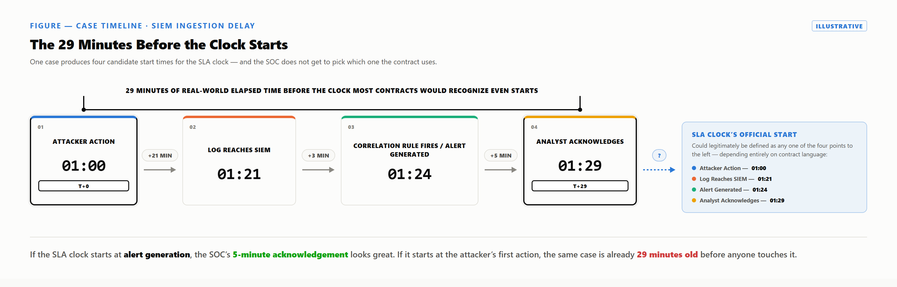

An SLA clock does not start itself. A definitions clause does — one sentence, written months before any incident exists to test it. Case Study 4 shows why that sentence matters most.
Four systems, four timestamps, one incident:
| Clock time | Event | Where the timestamp lives |
|---|---|---|
| 01:00 | Attacker action on the source host | Nowhere yet — reconstructed later from forensics |
| 01:21 | Logs reach the SIEM | Collector ingestion timestamp |
| 01:24 | Correlation rule fires an alert | SIEM alert-creation timestamp |
| 01:29 | Analyst acknowledges the alert | SOC ticketing acknowledgement timestamp |
When did the SLA clock start? All four timestamps are defensible, and each yields a different reported time for the same 29 minutes.
| Candidate clock-start | Time | Why it's defensible | Why it's contested |
|---|---|---|---|
| Start of attack | 01:00 | Measures the customer's actual exposure window. | Unknowable until forensic reconstruction. |
| Log arrival | 01:21 | First visibility the SOC's tooling has at all. | Bakes in logging and transit lag beyond analyst control. |
| Alert generation | 01:24 | First moment a human could plausibly act. | Excludes the 21-minute ingestion lag before it. |
| Analyst acknowledgement | 01:29 | Cleanest, fully SOC-controlled timestamp. | Makes "time-to-acknowledge" a tautology: clock starts when it stops. |
This isn't invented for this paper. IBM's own documentation for QRadar — a widely deployed SIEM — defines Device Time as the timestamp parsed from the event payload itself: the source's own report of when the activity happened. QRadar's Start Time is essentially that same source-reported timestamp — it falls back to arrival time only when the source provides none, so it is not when QRadar received the event. The field that actually marks when QRadar wrote the record is Storage Time, and it's the Start Time versus Storage Time gap that measures ingestion delay. IBM calls QRadar's correlation near real time — a qualitative phrase, not a numeric guarantee. Even inside one well-documented platform, "when did the clock start" stays unsolved.
